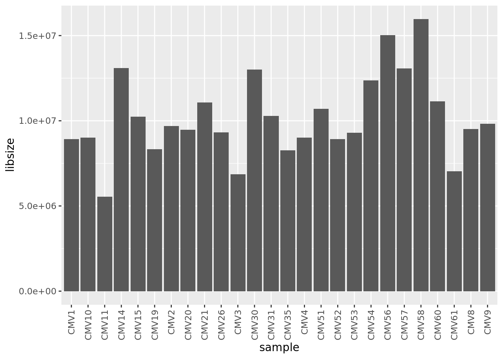
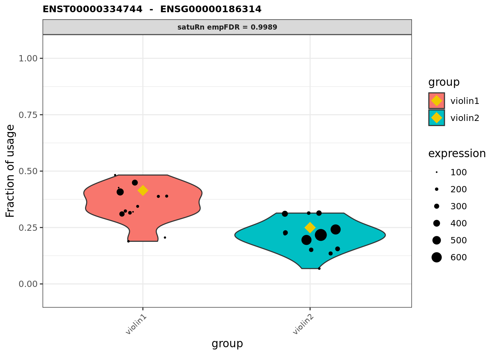
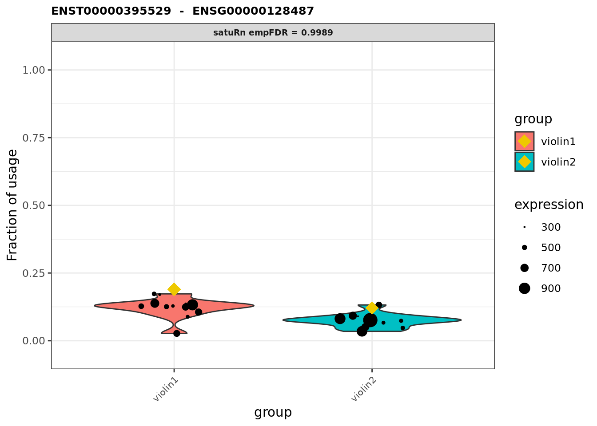
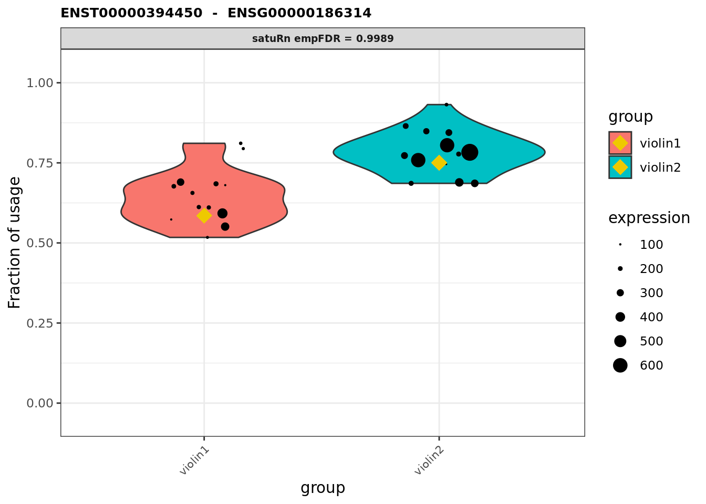
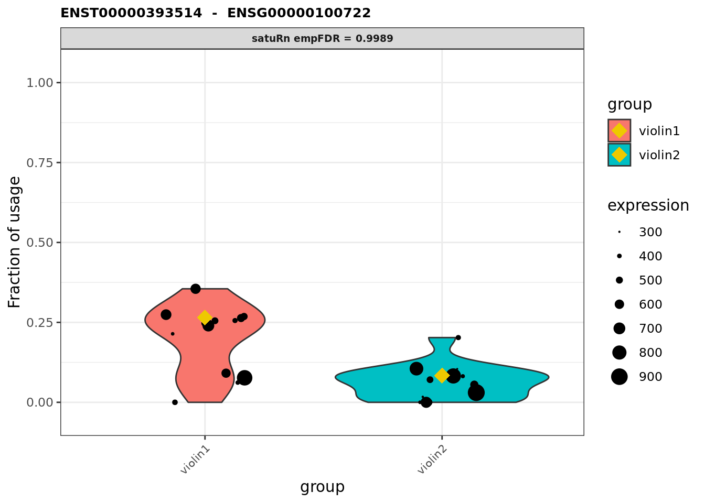
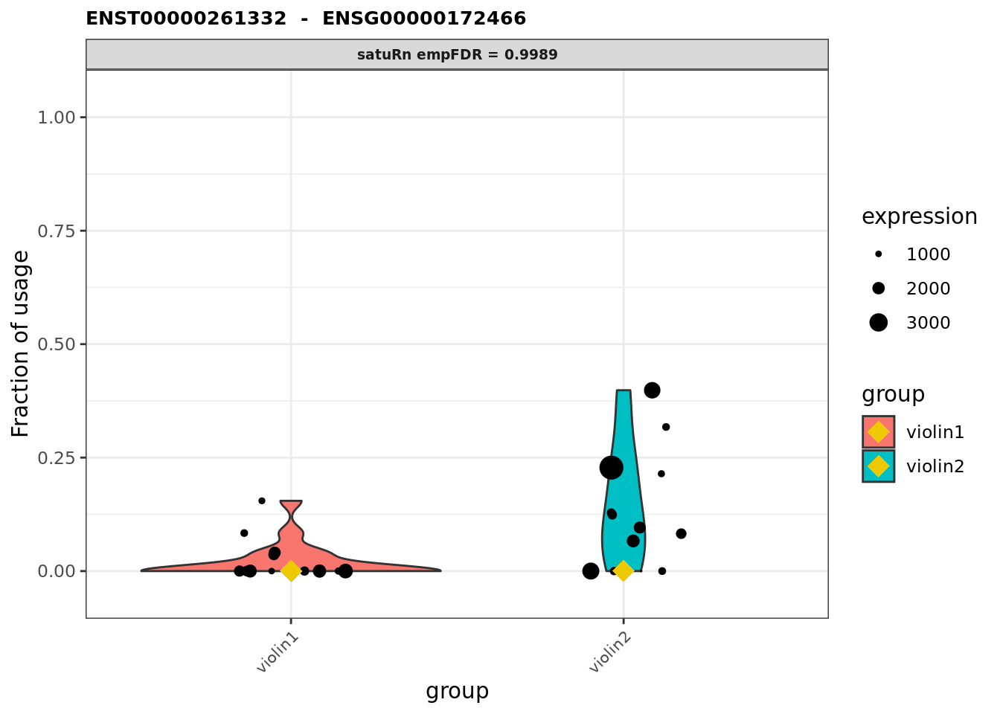
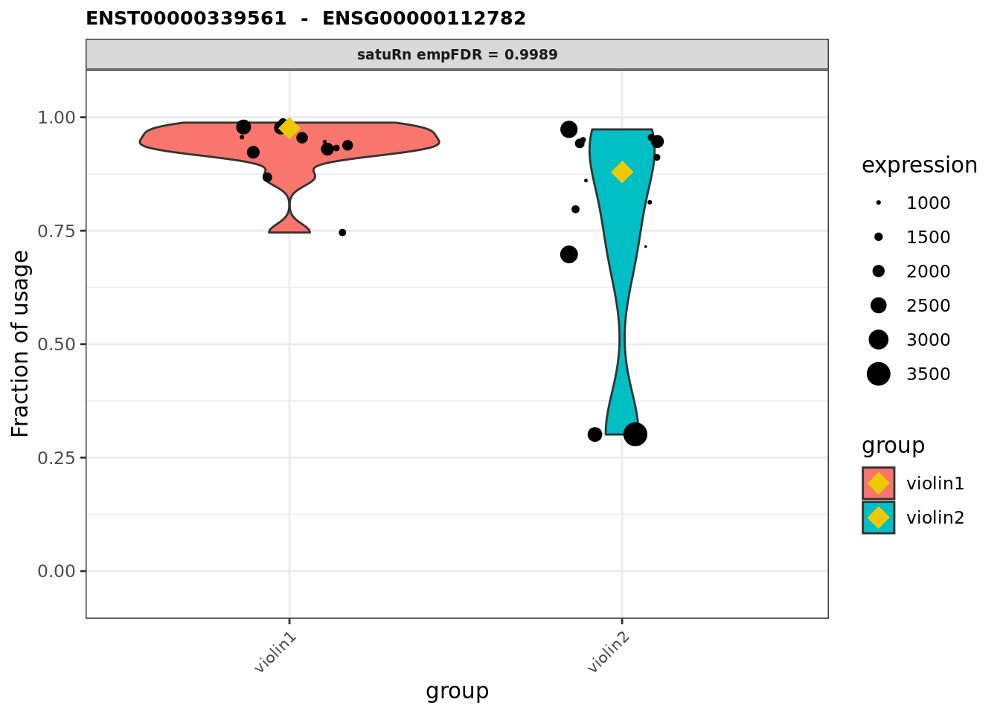

Last updated: 2021-07-09
Checks: 7 0
Knit directory: amnio-cell-free-RNA/
This reproducible R Markdown analysis was created with workflowr (version 1.6.2). The Checks tab describes the reproducibility checks that were applied when the results were created. The Past versions tab lists the development history.
Great! Since the R Markdown file has been committed to the Git repository, you know the exact version of the code that produced these results.
Great job! The global environment was empty. Objects defined in the global environment can affect the analysis in your R Markdown file in unknown ways. For reproduciblity it’s best to always run the code in an empty environment.
The command set.seed(20200224) was run prior to running the code in the R Markdown file. Setting a seed ensures that any results that rely on randomness, e.g. subsampling or permutations, are reproducible.
Great job! Recording the operating system, R version, and package versions is critical for reproducibility.
Nice! There were no cached chunks for this analysis, so you can be confident that you successfully produced the results during this run.
Great job! Using relative paths to the files within your workflowr project makes it easier to run your code on other machines.
Great! You are using Git for version control. Tracking code development and connecting the code version to the results is critical for reproducibility.
The results in this page were generated with repository version 382671c. See the Past versions tab to see a history of the changes made to the R Markdown and HTML files.
Note that you need to be careful to ensure that all relevant files for the analysis have been committed to Git prior to generating the results (you can use wflow_publish or wflow_git_commit). workflowr only checks the R Markdown file, but you know if there are other scripts or data files that it depends on. Below is the status of the Git repository when the results were generated:
Ignored files:
Ignored: .Rhistory
Ignored: .Rproj.user/
Ignored: analysis/figure/
Ignored: code/.bpipe/
Ignored: code/.rnaseq-test.groovy.swp
Ignored: data/.bpipe/
Ignored: data/190717_A00692_0021_AHLLHFDSXX/
Ignored: data/190729_A00692_0022_AHLLHFDSXX/
Ignored: data/190802_A00692_0023_AHLLHFDSXX/
Ignored: data/200612_A00692_0107_AHN3YCDMXX.tar
Ignored: data/200612_A00692_0107_AHN3YCDMXX/
Ignored: data/200626_A00692_0111_AHNJH7DMXX.tar
Ignored: data/200626_A00692_0111_AHNJH7DMXX/
Ignored: data/CMV-AF-database-corrected-oct-2020.csv
Ignored: data/CMV-AF-database-final-included-samples.csv
Ignored: data/GONE4.10.13.txt
Ignored: data/HK_genes.txt
Ignored: data/IPA molecule summary.xls
Ignored: data/IPA-molecule-summary.csv
Ignored: data/brain-development-geneset.txt
Ignored: data/commandlog.txt
Ignored: data/deduped_rRNA_coverage.txt
Ignored: data/gene-transcriptome-analysis/
Ignored: data/hg38_rRNA.bed
Ignored: data/hg38_rRNA.saf
Ignored: data/ignore-overlap-mapping/
Ignored: data/ignore/
Ignored: data/joindata.csv
Ignored: data/metadata.csv
Ignored: data/multiqc_data/
Ignored: data/multiqc_report.html
Ignored: data/samples.csv
Ignored: output/c2Ens.RData
Ignored: output/c5Ens.RData
Ignored: output/exclude-CMV11/
Ignored: output/hEns.RData
Ignored: output/keggEns.RData
Ignored: output/salmon-limma-voom-c5Cam.csv
Ignored: output/salmon-limma-voom.Rmd/
Ignored: output/salmon-limma-voom.csv
Ignored: output/salmon-ruvseq-edger.csv
Ignored: output/star-fc-limma-voom-all-gsea-c2.csv
Ignored: output/star-fc-limma-voom-all-gsea-c5.csv
Ignored: output/star-fc-limma-voom-all.csv
Ignored: output/star-fc-limma-voom-no_us_ab-gsea-c2.csv
Ignored: output/star-fc-limma-voom-no_us_ab-gsea-c5.csv
Ignored: output/star-fc-limma-voom-no_us_ab.csv
Ignored: output/star-fc-ruv-all-gsea-c2.csv
Ignored: output/star-fc-ruv-all-gsea-c5.csv
Ignored: output/star-fc-ruv-all.csv
Ignored: output/star-fc-ruv-no_us_ab-gsea-c2.csv
Ignored: output/star-fc-ruv-no_us_ab-gsea-c5.csv
Ignored: output/star-fc-ruv-no_us_ab.csv
Untracked files:
Untracked: .bpipe/
Untracked: 0.99.7.tar.gz
Untracked: analysis/STAR-diffSplice.Rmd
Untracked: analysis/salmon-DRIMseq.Rmd
Untracked: analysis/saturn-dtu.Rmd
Untracked: analysis/temp-core-081656-0025B5042A3E.sam-FTEST-0.tmp
Untracked: analysis/temp-core-081656-0025B5042A3E.sam-FTEST-1.tmp
Untracked: analysis/temp-core-081656-0025B5042A3E.sam-FTEST-2.tmp
Untracked: analysis/temp-core-081656-0025B5042A3E.sam-FTEST-3.tmp
Untracked: analysis/temp-core-081656-0025B5042A3E.sam-FTEST-4.tmp
Untracked: analysis/temp-core-081656-0025B5042A3E.sam-MERGE-TMP.tmp
Untracked: analysis/temp-core-081656-0025B5042A3E.sam-TH00-BK000000.tmp
Untracked: analysis/temp-core-081656-0025B5042A3E.sam-TH00-BK000001.tmp
Untracked: analysis/temp-core-081656-0025B5042A3E.sam-TH00-BK000002.tmp
Untracked: analysis/temp-core-081656-0025B5042A3E.sam-TH00-BK000003.tmp
Untracked: analysis/temp-core-081656-0025B5042A3E.sam-TH00-BK000004.tmp
Untracked: analysis/temp-core-081656-0025B5042A3E.sam-TH00-BK000005.tmp
Untracked: analysis/temp-core-081656-0025B5042A3E.sam-TH00-BK000006.tmp
Untracked: analysis/temp-core-081656-0025B5042A3E.sam-TH00-BK000007.tmp
Untracked: analysis/temp-core-081656-0025B5042A3E.sam-TH00-BK000008.tmp
Untracked: analysis/temp-core-081656-0025B5042A3E.sam-TH00-BK000009.tmp
Untracked: analysis/temp-core-081656-0025B5042A3E.sam-TH00-BK000010.tmp
Untracked: analysis/temp-core-081656-0025B5042A3E.sam-TH00-BK000011.tmp
Untracked: analysis/temp-core-081656-0025B5042A3E.sam-TH00-BK000012.tmp
Untracked: analysis/temp-core-081656-0025B5042A3E.sam-TH00-BK000013.tmp
Untracked: analysis/temp-core-081656-0025B5042A3E.sam-TH00-BK000014.tmp
Untracked: analysis/temp-core-081656-0025B5042A3E.sam-TH00-BK000015.tmp
Untracked: analysis/temp-core-081656-0025B5042A3E.sam-TH00-BK000016.tmp
Untracked: analysis/temp-core-081656-0025B5042A3E.sam-TH01-BK000000.tmp
Untracked: analysis/temp-core-081656-0025B5042A3E.sam-TH01-BK000001.tmp
Untracked: analysis/temp-core-081656-0025B5042A3E.sam-TH01-BK000002.tmp
Untracked: analysis/temp-core-081656-0025B5042A3E.sam-TH01-BK000003.tmp
Untracked: analysis/temp-core-081656-0025B5042A3E.sam-TH01-BK000004.tmp
Untracked: analysis/temp-core-081656-0025B5042A3E.sam-TH01-BK000005.tmp
Untracked: analysis/temp-core-081656-0025B5042A3E.sam-TH01-BK000006.tmp
Untracked: analysis/temp-core-081656-0025B5042A3E.sam-TH01-BK000007.tmp
Untracked: analysis/temp-core-081656-0025B5042A3E.sam-TH01-BK000008.tmp
Untracked: analysis/temp-core-081656-0025B5042A3E.sam-TH01-BK000009.tmp
Untracked: analysis/temp-core-081656-0025B5042A3E.sam-TH01-BK000010.tmp
Untracked: analysis/temp-core-081656-0025B5042A3E.sam-TH01-BK000011.tmp
Untracked: analysis/temp-core-081656-0025B5042A3E.sam-TH01-BK000012.tmp
Untracked: analysis/temp-core-081656-0025B5042A3E.sam-TH01-BK000013.tmp
Untracked: analysis/temp-core-081656-0025B5042A3E.sam-TH01-BK000014.tmp
Untracked: analysis/temp-core-081656-0025B5042A3E.sam-TH01-BK000015.tmp
Untracked: analysis/temp-core-081656-0025B5042A3E.sam-TH02-BK000000.tmp
Untracked: analysis/temp-core-081656-0025B5042A3E.sam-TH02-BK000001.tmp
Untracked: analysis/temp-core-081656-0025B5042A3E.sam-TH02-BK000002.tmp
Untracked: analysis/temp-core-081656-0025B5042A3E.sam-TH02-BK000003.tmp
Untracked: analysis/temp-core-081656-0025B5042A3E.sam-TH02-BK000004.tmp
Untracked: analysis/temp-core-081656-0025B5042A3E.sam-TH02-BK000005.tmp
Untracked: analysis/temp-core-081656-0025B5042A3E.sam-TH02-BK000006.tmp
Untracked: analysis/temp-core-081656-0025B5042A3E.sam-TH02-BK000007.tmp
Untracked: analysis/temp-core-081656-0025B5042A3E.sam-TH02-BK000008.tmp
Untracked: analysis/temp-core-081656-0025B5042A3E.sam-TH02-BK000009.tmp
Untracked: analysis/temp-core-081656-0025B5042A3E.sam-TH02-BK000010.tmp
Untracked: analysis/temp-core-081656-0025B5042A3E.sam-TH02-BK000011.tmp
Untracked: analysis/temp-core-081656-0025B5042A3E.sam-TH02-BK000012.tmp
Untracked: analysis/temp-core-081656-0025B5042A3E.sam-TH02-BK000013.tmp
Untracked: analysis/temp-core-081656-0025B5042A3E.sam-TH02-BK000014.tmp
Untracked: analysis/temp-core-081656-0025B5042A3E.sam-TH02-BK000015.tmp
Untracked: analysis/temp-core-081656-0025B5042A3E.sam-TH03-BK000000.tmp
Untracked: analysis/temp-core-081656-0025B5042A3E.sam-TH03-BK000001.tmp
Untracked: analysis/temp-core-081656-0025B5042A3E.sam-TH03-BK000002.tmp
Untracked: analysis/temp-core-081656-0025B5042A3E.sam-TH03-BK000003.tmp
Untracked: analysis/temp-core-081656-0025B5042A3E.sam-TH03-BK000004.tmp
Untracked: analysis/temp-core-081656-0025B5042A3E.sam-TH03-BK000005.tmp
Untracked: analysis/temp-core-081656-0025B5042A3E.sam-TH03-BK000006.tmp
Untracked: analysis/temp-core-081656-0025B5042A3E.sam-TH03-BK000007.tmp
Untracked: analysis/temp-core-081656-0025B5042A3E.sam-TH03-BK000008.tmp
Untracked: analysis/temp-core-081656-0025B5042A3E.sam-TH03-BK000009.tmp
Untracked: analysis/temp-core-081656-0025B5042A3E.sam-TH03-BK000010.tmp
Untracked: analysis/temp-core-081656-0025B5042A3E.sam-TH03-BK000011.tmp
Untracked: analysis/temp-core-081656-0025B5042A3E.sam-TH03-BK000012.tmp
Untracked: analysis/temp-core-081656-0025B5042A3E.sam-TH03-BK000013.tmp
Untracked: analysis/temp-core-081656-0025B5042A3E.sam-TH03-BK000014.tmp
Untracked: analysis/temp-core-081656-0025B5042A3E.sam-TH03-BK000015.tmp
Untracked: analysis/temp-core-081656-0025B5042A3E.sam-TH03-BK000016.tmp
Untracked: analysis/temp-core-081656-0025B5042A3E.sam-TH04-BK000000.tmp
Untracked: analysis/temp-core-081656-0025B5042A3E.sam-TH04-BK000001.tmp
Untracked: analysis/temp-core-081656-0025B5042A3E.sam-TH04-BK000002.tmp
Untracked: analysis/temp-core-081656-0025B5042A3E.sam-TH04-BK000003.tmp
Untracked: analysis/temp-core-081656-0025B5042A3E.sam-TH04-BK000004.tmp
Untracked: analysis/temp-core-081656-0025B5042A3E.sam-TH04-BK000005.tmp
Untracked: analysis/temp-core-081656-0025B5042A3E.sam-TH04-BK000006.tmp
Untracked: analysis/temp-core-081656-0025B5042A3E.sam-TH04-BK000007.tmp
Untracked: analysis/temp-core-081656-0025B5042A3E.sam-TH04-BK000008.tmp
Untracked: analysis/temp-core-081656-0025B5042A3E.sam-TH04-BK000009.tmp
Untracked: analysis/temp-core-081656-0025B5042A3E.sam-TH04-BK000010.tmp
Untracked: analysis/temp-core-081656-0025B5042A3E.sam-TH04-BK000011.tmp
Untracked: analysis/temp-core-081656-0025B5042A3E.sam-TH04-BK000012.tmp
Untracked: analysis/temp-core-081656-0025B5042A3E.sam-TH04-BK000013.tmp
Untracked: analysis/temp-core-081656-0025B5042A3E.sam-TH04-BK000014.tmp
Untracked: analysis/temp-core-081656-0025B5042A3E.sam-TH04-BK000015.tmp
Untracked: analysis/temp-core-081656-0025B5042A3E.sam-TH05-BK000000.tmp
Untracked: analysis/temp-core-081656-0025B5042A3E.sam-TH05-BK000001.tmp
Untracked: analysis/temp-core-081656-0025B5042A3E.sam-TH05-BK000002.tmp
Untracked: analysis/temp-core-081656-0025B5042A3E.sam-TH05-BK000003.tmp
Untracked: analysis/temp-core-081656-0025B5042A3E.sam-TH05-BK000004.tmp
Untracked: analysis/temp-core-081656-0025B5042A3E.sam-TH05-BK000005.tmp
Untracked: analysis/temp-core-081656-0025B5042A3E.sam-TH05-BK000006.tmp
Untracked: analysis/temp-core-081656-0025B5042A3E.sam-TH05-BK000007.tmp
Untracked: analysis/temp-core-081656-0025B5042A3E.sam-TH05-BK000008.tmp
Untracked: analysis/temp-core-081656-0025B5042A3E.sam-TH05-BK000009.tmp
Untracked: analysis/temp-core-081656-0025B5042A3E.sam-TH05-BK000010.tmp
Untracked: analysis/temp-core-081656-0025B5042A3E.sam-TH05-BK000011.tmp
Untracked: analysis/temp-core-081656-0025B5042A3E.sam-TH05-BK000012.tmp
Untracked: analysis/temp-core-081656-0025B5042A3E.sam-TH05-BK000013.tmp
Untracked: analysis/temp-core-081656-0025B5042A3E.sam-TH05-BK000014.tmp
Untracked: analysis/temp-core-081656-0025B5042A3E.sam-TH05-BK000015.tmp
Untracked: analysis/temp-core-081656-0025B5042A3E.sam-TH05-BK000016.tmp
Untracked: analysis/temp-core-081656-0025B5042A3E.sam-TH06-BK000000.tmp
Untracked: analysis/temp-core-081656-0025B5042A3E.sam-TH06-BK000001.tmp
Untracked: analysis/temp-core-081656-0025B5042A3E.sam-TH06-BK000002.tmp
Untracked: analysis/temp-core-081656-0025B5042A3E.sam-TH06-BK000003.tmp
Untracked: analysis/temp-core-081656-0025B5042A3E.sam-TH06-BK000004.tmp
Untracked: analysis/temp-core-081656-0025B5042A3E.sam-TH06-BK000005.tmp
Untracked: analysis/temp-core-081656-0025B5042A3E.sam-TH06-BK000006.tmp
Untracked: analysis/temp-core-081656-0025B5042A3E.sam-TH06-BK000007.tmp
Untracked: analysis/temp-core-081656-0025B5042A3E.sam-TH06-BK000008.tmp
Untracked: analysis/temp-core-081656-0025B5042A3E.sam-TH06-BK000009.tmp
Untracked: analysis/temp-core-081656-0025B5042A3E.sam-TH06-BK000010.tmp
Untracked: analysis/temp-core-081656-0025B5042A3E.sam-TH06-BK000011.tmp
Untracked: analysis/temp-core-081656-0025B5042A3E.sam-TH06-BK000012.tmp
Untracked: analysis/temp-core-081656-0025B5042A3E.sam-TH06-BK000013.tmp
Untracked: analysis/temp-core-081656-0025B5042A3E.sam-TH06-BK000014.tmp
Untracked: analysis/temp-core-081656-0025B5042A3E.sam-TH06-BK000015.tmp
Untracked: analysis/temp-core-081656-0025B5042A3E.sam-TH07-BK000000.tmp
Untracked: analysis/temp-core-081656-0025B5042A3E.sam-TH07-BK000001.tmp
Untracked: analysis/temp-core-081656-0025B5042A3E.sam-TH07-BK000002.tmp
Untracked: analysis/temp-core-081656-0025B5042A3E.sam-TH07-BK000003.tmp
Untracked: analysis/temp-core-081656-0025B5042A3E.sam-TH07-BK000004.tmp
Untracked: analysis/temp-core-081656-0025B5042A3E.sam-TH07-BK000005.tmp
Untracked: analysis/temp-core-081656-0025B5042A3E.sam-TH07-BK000006.tmp
Untracked: analysis/temp-core-081656-0025B5042A3E.sam-TH07-BK000007.tmp
Untracked: analysis/temp-core-081656-0025B5042A3E.sam-TH07-BK000008.tmp
Untracked: analysis/temp-core-081656-0025B5042A3E.sam-TH07-BK000009.tmp
Untracked: analysis/temp-core-081656-0025B5042A3E.sam-TH07-BK000010.tmp
Untracked: analysis/temp-core-081656-0025B5042A3E.sam-TH07-BK000011.tmp
Untracked: analysis/temp-core-081656-0025B5042A3E.sam-TH07-BK000012.tmp
Untracked: analysis/temp-core-081656-0025B5042A3E.sam-TH07-BK000013.tmp
Untracked: analysis/temp-core-081656-0025B5042A3E.sam-TH07-BK000014.tmp
Untracked: analysis/temp-core-081656-0025B5042A3E.sam-TH07-BK000015.tmp
Untracked: analysis/temp-core-081656-0025B5042A3E.sam-TH08-BK000000.tmp
Untracked: analysis/temp-core-081656-0025B5042A3E.sam-TH08-BK000001.tmp
Untracked: analysis/temp-core-081656-0025B5042A3E.sam-TH08-BK000002.tmp
Untracked: analysis/temp-core-081656-0025B5042A3E.sam-TH08-BK000003.tmp
Untracked: analysis/temp-core-081656-0025B5042A3E.sam-TH08-BK000004.tmp
Untracked: analysis/temp-core-081656-0025B5042A3E.sam-TH08-BK000005.tmp
Untracked: analysis/temp-core-081656-0025B5042A3E.sam-TH08-BK000006.tmp
Untracked: analysis/temp-core-081656-0025B5042A3E.sam-TH08-BK000007.tmp
Untracked: analysis/temp-core-081656-0025B5042A3E.sam-TH08-BK000008.tmp
Untracked: analysis/temp-core-081656-0025B5042A3E.sam-TH08-BK000009.tmp
Untracked: analysis/temp-core-081656-0025B5042A3E.sam-TH08-BK000010.tmp
Untracked: analysis/temp-core-081656-0025B5042A3E.sam-TH08-BK000011.tmp
Untracked: analysis/temp-core-081656-0025B5042A3E.sam-TH08-BK000012.tmp
Untracked: analysis/temp-core-081656-0025B5042A3E.sam-TH08-BK000013.tmp
Untracked: analysis/temp-core-081656-0025B5042A3E.sam-TH08-BK000014.tmp
Untracked: analysis/temp-core-081656-0025B5042A3E.sam-TH08-BK000015.tmp
Untracked: analysis/temp-core-081656-0025B5042A3E.sam-TH09-BK000000.tmp
Untracked: analysis/temp-core-081656-0025B5042A3E.sam-TH09-BK000001.tmp
Untracked: analysis/temp-core-081656-0025B5042A3E.sam-TH09-BK000002.tmp
Untracked: analysis/temp-core-081656-0025B5042A3E.sam-TH09-BK000003.tmp
Untracked: analysis/temp-core-081656-0025B5042A3E.sam-TH09-BK000004.tmp
Untracked: analysis/temp-core-081656-0025B5042A3E.sam-TH09-BK000005.tmp
Untracked: analysis/temp-core-081656-0025B5042A3E.sam-TH09-BK000006.tmp
Untracked: analysis/temp-core-081656-0025B5042A3E.sam-TH09-BK000007.tmp
Untracked: analysis/temp-core-081656-0025B5042A3E.sam-TH09-BK000008.tmp
Untracked: analysis/temp-core-081656-0025B5042A3E.sam-TH09-BK000009.tmp
Untracked: analysis/temp-core-081656-0025B5042A3E.sam-TH09-BK000010.tmp
Untracked: analysis/temp-core-081656-0025B5042A3E.sam-TH09-BK000011.tmp
Untracked: analysis/temp-core-081656-0025B5042A3E.sam-TH09-BK000012.tmp
Untracked: analysis/temp-core-081656-0025B5042A3E.sam-TH09-BK000013.tmp
Untracked: analysis/temp-core-081656-0025B5042A3E.sam-TH09-BK000014.tmp
Untracked: analysis/temp-core-081656-0025B5042A3E.sam-TH09-BK000015.tmp
Untracked: analysis/temp-core-081656-0025B5042A3E.sam-TH09-BK000016.tmp
Untracked: analysis/temp-core-081656-0025B5042A3E.sam-TH10-BK000000.tmp
Untracked: analysis/temp-core-081656-0025B5042A3E.sam-TH10-BK000001.tmp
Untracked: analysis/temp-core-081656-0025B5042A3E.sam-TH10-BK000002.tmp
Untracked: analysis/temp-core-081656-0025B5042A3E.sam-TH10-BK000003.tmp
Untracked: analysis/temp-core-081656-0025B5042A3E.sam-TH10-BK000004.tmp
Untracked: analysis/temp-core-081656-0025B5042A3E.sam-TH10-BK000005.tmp
Untracked: analysis/temp-core-081656-0025B5042A3E.sam-TH10-BK000006.tmp
Untracked: analysis/temp-core-081656-0025B5042A3E.sam-TH10-BK000007.tmp
Untracked: analysis/temp-core-081656-0025B5042A3E.sam-TH10-BK000008.tmp
Untracked: analysis/temp-core-081656-0025B5042A3E.sam-TH10-BK000009.tmp
Untracked: analysis/temp-core-081656-0025B5042A3E.sam-TH10-BK000010.tmp
Untracked: analysis/temp-core-081656-0025B5042A3E.sam-TH10-BK000011.tmp
Untracked: analysis/temp-core-081656-0025B5042A3E.sam-TH10-BK000012.tmp
Untracked: analysis/temp-core-081656-0025B5042A3E.sam-TH10-BK000013.tmp
Untracked: analysis/temp-core-081656-0025B5042A3E.sam-TH10-BK000014.tmp
Untracked: analysis/temp-core-081656-0025B5042A3E.sam-TH10-BK000015.tmp
Untracked: analysis/temp-core-081656-0025B5042A3E.sam-TH11-BK000000.tmp
Untracked: analysis/temp-core-081656-0025B5042A3E.sam-TH11-BK000001.tmp
Untracked: analysis/temp-core-081656-0025B5042A3E.sam-TH11-BK000002.tmp
Untracked: analysis/temp-core-081656-0025B5042A3E.sam-TH11-BK000003.tmp
Untracked: analysis/temp-core-081656-0025B5042A3E.sam-TH11-BK000004.tmp
Untracked: analysis/temp-core-081656-0025B5042A3E.sam-TH11-BK000005.tmp
Untracked: analysis/temp-core-081656-0025B5042A3E.sam-TH11-BK000006.tmp
Untracked: analysis/temp-core-081656-0025B5042A3E.sam-TH11-BK000007.tmp
Untracked: analysis/temp-core-081656-0025B5042A3E.sam-TH11-BK000008.tmp
Untracked: analysis/temp-core-081656-0025B5042A3E.sam-TH11-BK000009.tmp
Untracked: analysis/temp-core-081656-0025B5042A3E.sam-TH11-BK000010.tmp
Untracked: analysis/temp-core-081656-0025B5042A3E.sam-TH11-BK000011.tmp
Untracked: analysis/temp-core-081656-0025B5042A3E.sam-TH11-BK000012.tmp
Untracked: analysis/temp-core-081656-0025B5042A3E.sam-TH11-BK000013.tmp
Untracked: analysis/temp-core-081656-0025B5042A3E.sam-TH11-BK000014.tmp
Untracked: analysis/temp-core-081656-0025B5042A3E.sam-TH12-BK000000.tmp
Untracked: analysis/temp-core-081656-0025B5042A3E.sam-TH12-BK000001.tmp
Untracked: analysis/temp-core-081656-0025B5042A3E.sam-TH12-BK000002.tmp
Untracked: analysis/temp-core-081656-0025B5042A3E.sam-TH12-BK000003.tmp
Untracked: analysis/temp-core-081656-0025B5042A3E.sam-TH12-BK000004.tmp
Untracked: analysis/temp-core-081656-0025B5042A3E.sam-TH12-BK000005.tmp
Untracked: analysis/temp-core-081656-0025B5042A3E.sam-TH12-BK000006.tmp
Untracked: analysis/temp-core-081656-0025B5042A3E.sam-TH12-BK000007.tmp
Untracked: analysis/temp-core-081656-0025B5042A3E.sam-TH12-BK000008.tmp
Untracked: analysis/temp-core-081656-0025B5042A3E.sam-TH12-BK000009.tmp
Untracked: analysis/temp-core-081656-0025B5042A3E.sam-TH12-BK000010.tmp
Untracked: analysis/temp-core-081656-0025B5042A3E.sam-TH12-BK000011.tmp
Untracked: analysis/temp-core-081656-0025B5042A3E.sam-TH12-BK000012.tmp
Untracked: analysis/temp-core-081656-0025B5042A3E.sam-TH12-BK000013.tmp
Untracked: analysis/temp-core-081656-0025B5042A3E.sam-TH12-BK000014.tmp
Untracked: analysis/temp-core-081656-0025B5042A3E.sam-TH12-BK000015.tmp
Untracked: renv.lock
Untracked: satuRn-0.99.7/
Untracked: satuRn_0.99.7.tar.gz
Unstaged changes:
Modified: analysis/index.Rmd
Note that any generated files, e.g. HTML, png, CSS, etc., are not included in this status report because it is ok for generated content to have uncommitted changes.
These are the previous versions of the repository in which changes were made to the R Markdown (analysis/salmon-SatuRn.Rmd) and HTML (docs/salmon-SatuRn.html) files. If you’ve configured a remote Git repository (see ?wflow_git_remote), click on the hyperlinks in the table below to view the files as they were in that past version.
| File | Version | Author | Date | Message |
|---|---|---|---|---|
| Rmd | 382671c | Jovana Maksimovic | 2021-07-09 | wflow_publish(“analysis/salmon-SatuRn.Rmd”) |
Load sample information.
| id | CMV_status | pair | sex | GA_at_amnio | indication |
|---|---|---|---|---|---|
| CMV2 | neg | M1 | F | 20 | no_us_ab |
| CMV1 | pos | M1 | F | 21 | no_us_ab |
| CMV4 | pos | M2 | M | 21 | no_us_ab |
| CMV3 | neg | M2 | M | 22 | no_us_ab |
| CMV10 | neg | NC2 | F | 20 | us_ab |
| CMV11 | pos | NC1 | F | 19 | us_ab |
| CMV19 | pos | NC2 | F | 18 | no_us_ab |
| CMV35 | neg | L5 | M | 21 | no_us_ab |
| CMV30 | pos | L1 | F | 21 | no_us_ab |
| CMV31 | neg | L1 | F | 21 | no_us_ab |
| CMV8 | neg | L2 | F | 23 | no_us_ab |
| CMV9 | pos | L2 | F | 23 | no_us_ab |
| CMV26 | pos | L3 | F | 22 | no_us_ab |
| CMV56 | neg | L3 | F | 21 | no_us_ab |
| CMV14 | neg | L4 | F | 21 | no_us_ab |
| CMV15 | pos | L4 | F | 22 | no_us_ab |
| CMV20 | pos | L5 | M | 21 | no_us_ab |
| CMV51 | neg | L6 | M | 22 | no_us_ab |
| CMV57 | pos | L6 | M | 21 | no_us_ab |
| CMV58 | pos | L7 | M | 20 | no_us_ab |
| CMV60 | neg | L7 | M | 20 | no_us_ab |
| CMV52 | pos | L8 | M | 22 | no_us_ab |
| CMV61 | neg | L8 | M | 22 | no_us_ab |
| CMV54 | neg | L9 | F | 21 | no_us_ab |
| CMV53 | pos | L9 | F | 21 | us_ab |
| CMV21 | neg | NC1 | F | 21 | no_us_ab |
int <- intersect(names(files), targets$id)
targets <- targets[match(int, targets$id),]
files <- files[match(int, names(files))]
files CMV30
"/oshlack_lab/jovana.maksimovic/projects/MCRI/lisa.hui/amnio-cell-free-RNA/data/gene-transcriptome-analysis/quants/190717_A00692_0021_TL1906128_CMV30_MAN-20190712_OvationSoloRNA_L000/quant.sf"
CMV31
"/oshlack_lab/jovana.maksimovic/projects/MCRI/lisa.hui/amnio-cell-free-RNA/data/gene-transcriptome-analysis/quants/190717_A00692_0021_TL1906129_CMV31_MAN-20190712_OvationSoloRNA_L000/quant.sf"
CMV8
"/oshlack_lab/jovana.maksimovic/projects/MCRI/lisa.hui/amnio-cell-free-RNA/data/gene-transcriptome-analysis/quants/190717_A00692_0021_TL1906130_CMV8_MAN-20190712_OvationSoloRNA_L000/quant.sf"
CMV9
"/oshlack_lab/jovana.maksimovic/projects/MCRI/lisa.hui/amnio-cell-free-RNA/data/gene-transcriptome-analysis/quants/190717_A00692_0021_TL1906131_CMV9_MAN-20190712_OvationSoloRNA_L000/quant.sf"
CMV26
"/oshlack_lab/jovana.maksimovic/projects/MCRI/lisa.hui/amnio-cell-free-RNA/data/gene-transcriptome-analysis/quants/190717_A00692_0021_TL1906132_CMV26_MAN-20190712_OvationSoloRNA_L000/quant.sf"
CMV14
"/oshlack_lab/jovana.maksimovic/projects/MCRI/lisa.hui/amnio-cell-free-RNA/data/gene-transcriptome-analysis/quants/190717_A00692_0021_TL1906134_CMV14_MAN-20190712_OvationSoloRNA_L000/quant.sf"
CMV15
"/oshlack_lab/jovana.maksimovic/projects/MCRI/lisa.hui/amnio-cell-free-RNA/data/gene-transcriptome-analysis/quants/190717_A00692_0021_TL1906135_CMV15_MAN-20190712_OvationSoloRNA_L000/quant.sf"
CMV20
"/oshlack_lab/jovana.maksimovic/projects/MCRI/lisa.hui/amnio-cell-free-RNA/data/gene-transcriptome-analysis/quants/190717_A00692_0021_TL1906136_CMV20_MAN-20190712_OvationSoloRNA_L000/quant.sf"
CMV21
"/oshlack_lab/jovana.maksimovic/projects/MCRI/lisa.hui/amnio-cell-free-RNA/data/gene-transcriptome-analysis/quants/190717_A00692_0021_TL1906137_CMV21_MAN-20190712_OvationSoloRNA_L000/quant.sf"
CMV1
"/oshlack_lab/jovana.maksimovic/projects/MCRI/lisa.hui/amnio-cell-free-RNA/data/gene-transcriptome-analysis/quants/190717_A00692_0021_TL1906138_CMV1_MAN-20190712_OvationSoloRNA_L000/quant.sf"
CMV2
"/oshlack_lab/jovana.maksimovic/projects/MCRI/lisa.hui/amnio-cell-free-RNA/data/gene-transcriptome-analysis/quants/190717_A00692_0021_TL1906139_CMV2_MAN-20190712_OvationSoloRNA_L000/quant.sf"
CMV3
"/oshlack_lab/jovana.maksimovic/projects/MCRI/lisa.hui/amnio-cell-free-RNA/data/gene-transcriptome-analysis/quants/190717_A00692_0021_TL1906140_CMV3_MAN-20190712_OvationSoloRNA_L000/quant.sf"
CMV4
"/oshlack_lab/jovana.maksimovic/projects/MCRI/lisa.hui/amnio-cell-free-RNA/data/gene-transcriptome-analysis/quants/190717_A00692_0021_TL1906141_CMV4_MAN-20190712_OvationSoloRNA_L000/quant.sf"
CMV10
"/oshlack_lab/jovana.maksimovic/projects/MCRI/lisa.hui/amnio-cell-free-RNA/data/gene-transcriptome-analysis/quants/190717_A00692_0021_TL1906142_CMV10_MAN-20190712_OvationSoloRNA_L000/quant.sf"
CMV11
"/oshlack_lab/jovana.maksimovic/projects/MCRI/lisa.hui/amnio-cell-free-RNA/data/gene-transcriptome-analysis/quants/190717_A00692_0021_TL1906143_CMV11_MAN-20190712_OvationSoloRNA_L000/quant.sf"
CMV19
"/oshlack_lab/jovana.maksimovic/projects/MCRI/lisa.hui/amnio-cell-free-RNA/data/gene-transcriptome-analysis/quants/190717_A00692_0021_TL1906145_CMV19_MAN-20190712_OvationSoloRNA_L000/quant.sf"
CMV35
"/oshlack_lab/jovana.maksimovic/projects/MCRI/lisa.hui/amnio-cell-free-RNA/data/gene-transcriptome-analysis/quants/190717_A00692_0021_TL1906146_CMV35_MAN-20190712_OvationSoloRNA_L000/quant.sf"
CMV51
"/oshlack_lab/jovana.maksimovic/projects/MCRI/lisa.hui/amnio-cell-free-RNA/data/gene-transcriptome-analysis/quants/200612_A00692_0107_ML205836_CMV51_MAN-20200611_OvationSoloRNA_L000/quant.sf"
CMV52
"/oshlack_lab/jovana.maksimovic/projects/MCRI/lisa.hui/amnio-cell-free-RNA/data/gene-transcriptome-analysis/quants/200612_A00692_0107_ML205837_CMV52_MAN-20200611_OvationSoloRNA_L000/quant.sf"
CMV53
"/oshlack_lab/jovana.maksimovic/projects/MCRI/lisa.hui/amnio-cell-free-RNA/data/gene-transcriptome-analysis/quants/200612_A00692_0107_ML205838_CMV53_MAN-20200611_OvationSoloRNA_L000/quant.sf"
CMV54
"/oshlack_lab/jovana.maksimovic/projects/MCRI/lisa.hui/amnio-cell-free-RNA/data/gene-transcriptome-analysis/quants/200612_A00692_0107_ML205839_CMV54_MAN-20200611_OvationSoloRNA_L000/quant.sf"
CMV56
"/oshlack_lab/jovana.maksimovic/projects/MCRI/lisa.hui/amnio-cell-free-RNA/data/gene-transcriptome-analysis/quants/200612_A00692_0107_ML205840_CMV56_MAN-20200611_OvationSoloRNA_L000/quant.sf"
CMV57
"/oshlack_lab/jovana.maksimovic/projects/MCRI/lisa.hui/amnio-cell-free-RNA/data/gene-transcriptome-analysis/quants/200612_A00692_0107_ML205841_CMV57_MAN-20200611_OvationSoloRNA_L000/quant.sf"
CMV58
"/oshlack_lab/jovana.maksimovic/projects/MCRI/lisa.hui/amnio-cell-free-RNA/data/gene-transcriptome-analysis/quants/200612_A00692_0107_ML205842_CMV58_MAN-20200611_OvationSoloRNA_L000/quant.sf"
CMV60
"/oshlack_lab/jovana.maksimovic/projects/MCRI/lisa.hui/amnio-cell-free-RNA/data/gene-transcriptome-analysis/quants/200612_A00692_0107_ML205843_CMV60_MAN-20200611_OvationSoloRNA_L000/quant.sf"
CMV61
"/oshlack_lab/jovana.maksimovic/projects/MCRI/lisa.hui/amnio-cell-free-RNA/data/gene-transcriptome-analysis/quants/200612_A00692_0107_ML205844_CMV61_MAN-20200611_OvationSoloRNA_L000/quant.sf" Import transcript information First, we need an object that links transcripts to their corresponding genes. We suggest using the BioConductor R packages AnnotationHub and ensembldb for this purpose.
edb <- EnsDb.Hsapiens.v86
txs <- transcripts(edb)
head(txs)GRanges object with 6 ranges and 6 metadata columns:
seqnames ranges strand | tx_id
<Rle> <IRanges> <Rle> | <character>
ENST00000456328 1 11869-14409 + | ENST00000456328
ENST00000450305 1 12010-13670 + | ENST00000450305
ENST00000488147 1 14404-29570 - | ENST00000488147
ENST00000619216 1 17369-17436 - | ENST00000619216
ENST00000473358 1 29554-31097 + | ENST00000473358
ENST00000469289 1 30267-31109 + | ENST00000469289
tx_biotype tx_cds_seq_start tx_cds_seq_end
<character> <integer> <integer>
ENST00000456328 processed_transcript <NA> <NA>
ENST00000450305 transcribed_unproces.. <NA> <NA>
ENST00000488147 unprocessed_pseudogene <NA> <NA>
ENST00000619216 miRNA <NA> <NA>
ENST00000473358 lincRNA <NA> <NA>
ENST00000469289 lincRNA <NA> <NA>
gene_id tx_name
<character> <character>
ENST00000456328 ENSG00000223972 ENST00000456328
ENST00000450305 ENSG00000223972 ENST00000450305
ENST00000488147 ENSG00000227232 ENST00000488147
ENST00000619216 ENSG00000278267 ENST00000619216
ENST00000473358 ENSG00000243485 ENST00000473358
ENST00000469289 ENSG00000243485 ENST00000469289
-------
seqinfo: 357 sequences from GRCh38 genomeData wrangling Next, we perform some data wrangling steps to get the data in a format that is suited for satuRn. First, we create a DataFrame or Matrix linking transcripts to their corresponding genes.
! Important: satuRn is implemented such that the columns with transcript identifiers is names isoform_id, while the column containing gene identifiers should be named gene_id. In addition, following chunk removes transcripts that are the only isoform expressed of a certain gene, as they cannot be used in a DTU analysis.
# Get the transcript information in correct format
txInfo <- as.data.frame(matrix(data = NA, nrow = length(txs), ncol = 2))
colnames(txInfo) <- c("isoform_id", "gene_id")
txInfo$isoform_id <- txs$tx_id
txInfo$gene_id <- txs$gene_id
rownames(txInfo) <- txInfo$isoform_id
head(txInfo) isoform_id gene_id
ENST00000456328 ENST00000456328 ENSG00000223972
ENST00000450305 ENST00000450305 ENSG00000223972
ENST00000488147 ENST00000488147 ENSG00000227232
ENST00000619216 ENST00000619216 ENSG00000278267
ENST00000473358 ENST00000473358 ENSG00000243485
ENST00000469289 ENST00000469289 ENSG00000243485Import transcript counts, match with gene IDs and remove transcripts that are the only isoform of a gene.
txi <- tximport(files, type = "salmon", txOut = TRUE)reading in files with read_tsv1 2 3 4 5 6 7 8 9 10 11 12 13 14 15 16 17 18 19 20 21 22 23 24 25 26 cts <- txi$counts
rownames(cts) <- sub("\\..*", "", rownames(cts))
txInfo <- txInfo[txInfo$isoform_id %in% rownames(cts), ]
txInfo <- subset(txInfo,
duplicated(gene_id) | duplicated(gene_id, fromLast = TRUE))
cts <- cts[which(rownames(cts) %in% txInfo$isoform_id), ]
dim(cts)[1] 160351 26colSums(cts) %>%
data.frame %>%
rownames_to_column(var = "sample") %>%
dplyr::rename("libsize" = ".") %>%
ggplot(aes(x = sample, y = libsize)) +
geom_bar(stat = "identity") +
theme(axis.text.x = element_text(angle = 90, hjust = 1, vjust = 0.5))
Filtering Here we perform some feature-level filtering. For this task, we adopt the filtering criterion that is implemented in the R package edgeR. Alternatively, one could adopt the dmFilter criterion from the DRIMSeq R package, which provides a more stringent filtering when both methods are run in default settings. After filtering, we again remove transcripts that are the only isoform expressed of a certain gene.
filter_edgeR <- filterByExpr(cts,
design = NULL,
group = targets$CMV_status,
)
table(filter_edgeR)filter_edgeR
FALSE TRUE
134588 25763 cts <- cts[filter_edgeR, ]
# Update txInfo according to the filtering procedure
txInfo <- txInfo[which(
txInfo$isoform_id %in% rownames(cts)), ]
# remove txs that are the only isoform expressed within a gene (after filtering)
txInfo <- subset(txInfo,
duplicated(gene_id) | duplicated(gene_id, fromLast = TRUE))
cts <- cts[which(rownames(cts) %in% txInfo$isoform_id), ]
# satuRn requires the transcripts in the rowData and
# the transcripts in the count matrix to be in the same order.
txInfo <- txInfo[match(rownames(cts), txInfo$isoform_id), ]
dim(txInfo)[1] 20418 2Generate SummarizedExperiment All three main functions of satuRn require a SummarizedExperiment object as an input class. See the SummarizedExperiment vignette (Morgan Martin, n.d.) for more information on this object class.
Do not forget to include the design matrix formula (see above) to the SummarizedExperiment as indicated below. As such, the object contains all the information required for the downstream DTU analysis.
sumExp <- SummarizedExperiment::SummarizedExperiment(
assays = list(counts = cts),
colData = targets,
rowData = txInfo
)
# specify design formula from colData
metadata(sumExp)$formula <- ~ 0 + as.factor(colData(sumExp)$CMV_status) + as.factor(colData(sumExp)$pair)
sumExpclass: SummarizedExperiment
dim: 20418 26
metadata(1): formula
assays(1): counts
rownames(20418): ENST00000447500 ENST00000590817 ... ENST00000496011
ENST00000479401
rowData names(2): isoform_id gene_id
colnames(26): CMV30 CMV31 ... CMV60 CMV61
colData names(6): id CMV_status ... GA_at_amnio indicationFit quasi-binomial generalized linear models models The fitDTU function of satuRn is used to model transcript usage in different groups of samples or cells. Here we adopt the default settings of the function. Without parallelized execution, this code runs for approximately 15 seconds on a 2018 macbook pro laptop.
system.time({
sumExp <- satuRn::fitDTU(
object = sumExp,
formula = ~ 0 + CMV_status + pair,
parallel = FALSE,
BPPARAM = BiocParallel::bpparam(),
verbose = TRUE
)
})Warning: glm.fit: algorithm did not converge
Warning: glm.fit: algorithm did not converge
Warning: glm.fit: algorithm did not converge
Warning: glm.fit: algorithm did not converge
Warning: glm.fit: algorithm did not converge
Warning: glm.fit: algorithm did not converge
Warning: glm.fit: algorithm did not converge
Warning: glm.fit: algorithm did not converge
Warning: glm.fit: algorithm did not converge
Warning: glm.fit: algorithm did not converge
Warning: glm.fit: algorithm did not converge
Warning: glm.fit: algorithm did not converge
Warning: glm.fit: algorithm did not converge
Warning: glm.fit: algorithm did not converge
Warning: glm.fit: algorithm did not converge
Warning: glm.fit: algorithm did not converge
Warning: glm.fit: algorithm did not converge
Warning: glm.fit: algorithm did not converge
Warning: glm.fit: algorithm did not converge
Warning: glm.fit: algorithm did not converge
Warning: glm.fit: algorithm did not converge
Warning: glm.fit: algorithm did not converge
Warning: glm.fit: algorithm did not converge user system elapsed
36.578 0.972 37.554 Set up contrast matrix First, we set up a contrast matrix. This allows us to test for differential transcript usage between groups of interest. The group factor in this toy example contains three levels; (1) ALM.L5_IT_ALM_Tmem163_Dmrtb1, (2) ALM.L5_IT_ALM_Tnc, (3) VISp.L5_IT_VISp_Hsd11b1_Endou. Here we show to assess DTU between cells of the groups 1 and 3 and between cells of groups 2 and 3.
group <- as.factor(targets$CMV_status)
pair <- as.factor(targets$pair)
design <- model.matrix(~ 0 + group + pair) # construct design matrix
colnames(design)[1:2] <- levels(group)
L <- limma::makeContrasts(
Contrast1 = neg - pos,
levels = design
)
L # contrast matrix Contrasts
Levels Contrast1
neg 1
pos -1
pairL2 0
pairL3 0
pairL4 0
pairL5 0
pairL6 0
pairL7 0
pairL8 0
pairL9 0
pairM1 0
pairM2 0
pairNC1 0
pairNC2 0Perform the test Next we can perform differential usage testing using testDTU. We again adopt default settings. For more information on the parameter settings, please comsult the help file of the testDTU function.
sumExp <- satuRn::testDTU(
object = sumExp,
contrasts = L,
plot = FALSE,
sort = TRUE
)The test results are now saved into the rowData of our SummarizedExperiment object under the name fitDTUResult_ followed by the name of the contrast of interest (i.e. the column names of the contrast matrix). The results can be accessed as follows:
head(rowData(sumExp)[["fitDTUResult_Contrast1"]]) estimates se df t pval
ENST00000334744 0.7551322 0.14028475 12.88846 5.382853 0.0001285312
ENST00000395529 0.5284519 0.09881913 12.88846 5.347668 0.0001364873
ENST00000394450 -0.7551322 0.14028475 12.88846 -5.382853 0.0001285312
ENST00000393514 1.3760246 0.26381365 12.88846 5.215896 0.0001711735
ENST00000261332 -2.1028953 0.41375757 12.88846 -5.082433 0.0002158215
ENST00000339561 1.7050454 0.34349751 12.88846 4.963778 0.0002657436
regular_FDR empirical_pval empirical_FDR
ENST00000334744 0.7544186 0.0004076967 0.9988623
ENST00000395529 0.7544186 0.0004291954 0.9988623
ENST00000394450 0.7544186 0.0004651809 0.9988623
ENST00000393514 0.7544186 0.0005209740 0.9988623
ENST00000261332 0.7544186 0.0007220416 0.9988623
ENST00000339561 0.7544186 0.0007592072 0.9988623Visualize DTU Finally, we may visualize the usage of select transcripts in select groups of interest.
group1 <- rownames(colData(sumExp))[colData(sumExp)$CMV_status ==
"neg"]
group2 <- rownames(colData(sumExp))[colData(sumExp)$CMV_status ==
"pos"]
plots <- satuRn::plotDTU(
object = sumExp,
contrast = "Contrast1",
groups = list(group1, group2),
coefficients = list(c(1, rep(0, 13)),
c(0, 1, rep(0,12))),
summaryStat = "model",
top.n = 6
)
plots[[1]]
[[2]]
[[3]]
[[4]]
[[5]]
[[6]]
Two-stage testing procedure satuRn returns transcript-level p-values for each of the specified contrasts. While we have shown that satuRn is able to adequately control the false discovery rate (FDR) at the transcript level (Gilis Jeroen 2021), (Van den Berge Koen 2017) argued that it is often desirable to control the FDR at the gene level. This boosts statistical power and eases downstream biological interpretation and validation, which typically occur at the gene level.
To this end, (Van den Berge Koen 2017) developed a testing procedure that is implemented in the BioConductor R package stageR. The procedure consists of two stages; a screening stage and a confirmation stage.
In the screening stage, gene-level FDR-adjusted p-values are computed, which aggregate the evidence for differential transcript usage over all transcripts within the gene. Only genes with an FDR below the desired nominal level are further considered in the second stage. In the confirmation stage, transcript-level p-values are adjusted for those genes, using a FWER-controlling method on the FDR-adjusted significance level.
In its current implementation, stageR can only perform stage-wise testing if only one contrast is of interest in a DTU setting. An analogous correction for the assessment of multiple contrasts for multiple transcripts per gene has not yet been implemented.
Below, we demonstrate how the transcript-level p-values for the first contrast as returned by satuRn can be post-processed using stageR. We rely on the perGeneQValue function:
# transcript level p-values from satuRn
pvals <- rowData(sumExp)[["fitDTUResult_Contrast1"]]$empirical_pval
# compute gene level q-values
geneID <- factor(rowData(sumExp)$gene_id)
geneSplit <- split(seq(along = geneID), geneID)
pGene <- sapply(geneSplit, function(i) min(pvals[i]))
pGene[is.na(pGene)] <- 1
theta <- unique(sort(pGene))
# gene-level significance testing
q <- DEXSeq:::perGeneQValueExact(pGene, theta, geneSplit)
qScreen <- rep(NA_real_, length(pGene))
qScreen <- q[match(pGene, theta)]
qScreen <- pmin(1, qScreen)
names(qScreen) <- names(geneSplit)
# prepare stageR input
tx2gene <- as.data.frame(rowData(sumExp)[c("isoform_id", "gene_id")])
colnames(tx2gene) <- c("transcript", "gene")
pConfirmation <- matrix(matrix(pvals),
ncol = 1,
dimnames = list(rownames(tx2gene), "transcript")
)
# create a stageRTx object
stageRObj <- stageR::stageRTx(
pScreen = qScreen,
pConfirmation = pConfirmation,
pScreenAdjusted = TRUE,
tx2gene = tx2gene
)
# perform the two-stage testing procedure
stageRObj <- stageR::stageWiseAdjustment(
object = stageRObj,
method = "dtu",
alpha = 0.05,
allowNA = TRUE
)
# retrieves the adjusted p-values from the stageRTx object
padj <- stageR::getAdjustedPValues(stageRObj,
order = TRUE,
onlySignificantGenes = FALSE
)The returned adjusted p-values are based on a stage-wise testing approach and are only valid for the provided target OFDR level of 5%. If a different target OFDR level is of interest,the entire adjustment should be re-run.
sessionInfo()R version 4.0.2 (2020-06-22)
Platform: x86_64-pc-linux-gnu (64-bit)
Running under: CentOS Linux 7 (Core)
Matrix products: default
BLAS: /config/binaries/R/4.0.2/lib64/R/lib/libRblas.so
LAPACK: /config/binaries/R/4.0.2/lib64/R/lib/libRlapack.so
locale:
[1] LC_CTYPE=en_AU.UTF-8 LC_NUMERIC=C
[3] LC_TIME=en_AU.UTF-8 LC_COLLATE=en_AU.UTF-8
[5] LC_MONETARY=en_AU.UTF-8 LC_MESSAGES=en_AU.UTF-8
[7] LC_PAPER=en_AU.UTF-8 LC_NAME=C
[9] LC_ADDRESS=C LC_TELEPHONE=C
[11] LC_MEASUREMENT=en_AU.UTF-8 LC_IDENTIFICATION=C
attached base packages:
[1] stats4 parallel stats graphics grDevices utils datasets
[8] methods base
other attached packages:
[1] stageR_1.12.0 DEXSeq_1.36.0
[3] RColorBrewer_1.1-2 DESeq2_1.30.1
[5] BiocParallel_1.24.1 SummarizedExperiment_1.20.0
[7] MatrixGenerics_1.2.1 matrixStats_0.59.0
[9] edgeR_3.32.1 limma_3.46.0
[11] EnsDb.Hsapiens.v86_2.99.0 ensembldb_2.14.0
[13] AnnotationFilter_1.14.0 GenomicFeatures_1.42.1
[15] AnnotationDbi_1.52.0 GenomicRanges_1.42.0
[17] GenomeInfoDb_1.26.7 IRanges_2.24.1
[19] S4Vectors_0.28.1 AnnotationHub_2.22.0
[21] BiocFileCache_1.14.0 dbplyr_2.1.0
[23] satuRn_0.99.7 tximport_1.18.0
[25] patchwork_1.1.1 NMF_0.23.0
[27] Biobase_2.50.0 BiocGenerics_0.36.1
[29] cluster_2.1.0 rngtools_1.5
[31] pkgmaker_0.32.2 registry_0.5-1
[33] forcats_0.5.1 stringr_1.4.0
[35] dplyr_1.0.4 purrr_0.3.4
[37] readr_1.4.0 tidyr_1.1.2
[39] tibble_3.1.2 ggplot2_3.3.5
[41] tidyverse_1.3.0 here_1.0.1
[43] workflowr_1.6.2
loaded via a namespace (and not attached):
[1] readxl_1.3.1 backports_1.2.1
[3] plyr_1.8.6 lazyeval_0.2.2
[5] splines_4.0.2 gridBase_0.4-7
[7] digest_0.6.27 foreach_1.5.1
[9] htmltools_0.5.1.1 fansi_0.5.0
[11] magrittr_2.0.1 memoise_2.0.0
[13] doParallel_1.0.16 annotate_1.68.0
[15] Biostrings_2.58.0 modelr_0.1.8
[17] askpass_1.1 prettyunits_1.1.1
[19] colorspace_2.0-2 blob_1.2.1
[21] rvest_0.3.6 rappdirs_0.3.3
[23] haven_2.3.1 xfun_0.23
[25] crayon_1.4.1 RCurl_1.98-1.3
[27] jsonlite_1.7.2 genefilter_1.72.1
[29] survival_3.2-7 iterators_1.0.13
[31] glue_1.4.2 gtable_0.3.0
[33] zlibbioc_1.36.0 XVector_0.30.0
[35] DelayedArray_0.16.3 scales_1.1.1
[37] DBI_1.1.1 Rcpp_1.0.6
[39] xtable_1.8-4 progress_1.2.2
[41] bit_4.0.4 httr_1.4.2
[43] ellipsis_0.3.2 farver_2.1.0
[45] pkgconfig_2.0.3 XML_3.99-0.5
[47] locfit_1.5-9.4 utf8_1.2.1
[49] labeling_0.4.2 tidyselect_1.1.0
[51] rlang_0.4.11 reshape2_1.4.4
[53] later_1.1.0.1 munsell_0.5.0
[55] BiocVersion_3.12.0 cellranger_1.1.0
[57] tools_4.0.2 cachem_1.0.4
[59] cli_3.0.0 generics_0.1.0
[61] RSQLite_2.2.5 broom_0.7.4
[63] evaluate_0.14 fastmap_1.1.0
[65] yaml_2.2.1 knitr_1.31
[67] bit64_4.0.5 fs_1.5.0
[69] pbapply_1.4-3 whisker_0.4
[71] mime_0.10 xml2_1.3.2
[73] biomaRt_2.46.3 compiler_4.0.2
[75] rstudioapi_0.13 curl_4.3
[77] interactiveDisplayBase_1.28.0 reprex_1.0.0
[79] statmod_1.4.35 geneplotter_1.68.0
[81] stringi_1.5.3 highr_0.8
[83] lattice_0.20-41 ProtGenerics_1.22.0
[85] Matrix_1.3-2 vctrs_0.3.8
[87] pillar_1.6.1 lifecycle_1.0.0
[89] BiocManager_1.30.10 bitops_1.0-7
[91] rtracklayer_1.50.0 httpuv_1.5.5
[93] hwriter_1.3.2 R6_2.5.0
[95] promises_1.2.0.1 codetools_0.2-18
[97] boot_1.3-26 assertthat_0.2.1
[99] openssl_1.4.3 rprojroot_2.0.2
[101] withr_2.4.2 GenomicAlignments_1.26.0
[103] Rsamtools_2.6.0 GenomeInfoDbData_1.2.4
[105] locfdr_1.1-8 hms_1.0.0
[107] grid_4.0.2 rmarkdown_2.6
[109] git2r_0.28.0 shiny_1.6.0
[111] lubridate_1.7.9.2